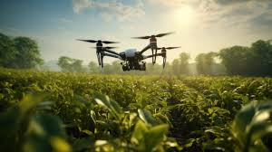

É basicamente o uso de máquinas e tecnologia na agricultura, ajudando assim o produtor a diferenciar cada área de seu plantio, para otimizar e melhorar seu trabalho.
A agricultura de precisão otimiza tempo e trabalho, ajudando imensamente o produtor, por outro lado, tem custos muito altos, aumentando o preço dos alimentos.
É de extrema importância saber sobre a tal agricultura, pois, é por ela que o preço e a entrega podem aumentar ou diminuir